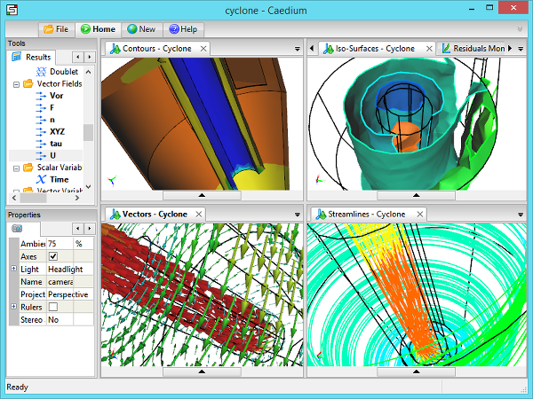
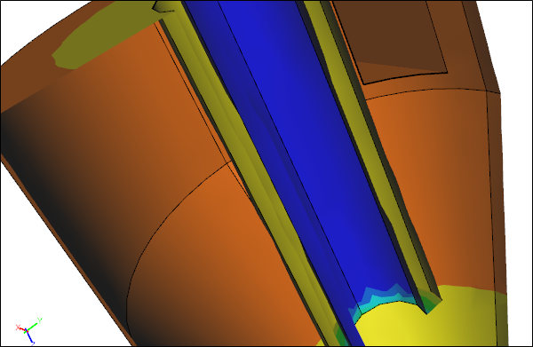
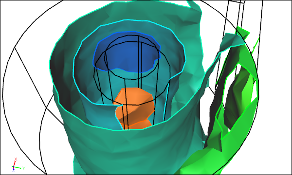
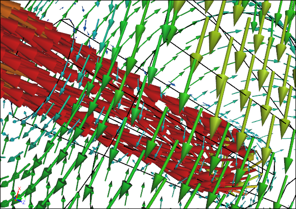
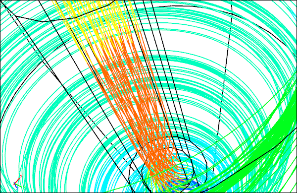

Color Maps, Vectors, Streamlines, Action!
Computation Fluid Dynamics (CFD) is synonymous with impressive 3D visualization. Learn more about the basic 3D visualization techniques in CFD and how they can help you reduce the mass of raw data from a simulation into insightful and beautiful graphics.
3D Visualization in CaediumCFD simulation of a cyclone
Surface Color Map (Contours)
Contours are a surface-based visualization for scalars that can be either open (lines) or filled. Typically you create colored contour bands of constant value on a surface. You can reduce a vector to a scalar by using a component (e.g., X) or taking the vector's magnitude. Being a surface-based visualization technique it is relatively quick to calculate and doesn't consume much additional memory.
Contours
Contours are useful for visualizing surface pressures to highlight extreme values that can be investigated further during a drag study. Also looking at surface mesh metrics (e.g., ideal surface element edge ratios) is useful when you are trying to track down poor mesh quality issues.
Volume Color Map (Iso-Surfaces)
Iso-surfaces are a volume-based visualization for scalars, analogous to surface-based contours. Typically multiple surfaces of constant value are extracted from the scalar field. Each surface is colored relative to an associated color-scalar assignment. Being volume-based this visualization technique can take a while to calculate and can consume significant additional memory.
Iso-Surfaces
Iso-surfaces are useful in revealing structures away from surfaces. For example, visualizing iso-surfaces of velocity magnitude can be used to identify regions of slow moving flow that could be avoided to yield a more efficient design. By visualizing volume mesh metrics (e.g., ideal element volume ratios) you can identify poor mesh quality with a view to making improvements.
Vectors
Vectors are a point-based visualization technique where glyphs (e.g., arrows) are aligned according to a vector's direction and are scaled according to a vector's magnitude. Vectors can be displayed on any geometry entity (vertices, edges, faces, volumes) that has an associated mesh. Vectors can also be colored according to a scalar field. There is very little calculation required to construct a vector visualization. However, the memory requirement varies according to the number of points (typically high for volumes, and lower for faces) and the number of elements that represents each glyph. For example, a 3D arrow requires more resources to display than a 2D planar arrow.
Vectors
Visualizing the velocity vector field on a surface is one way to locate recirculation zones, but using streamlines (see below) is often more reliable. Prior to running a simulation it is useful to display the velocity field as vectors to ensure you have correctly set the reference velocity and dependent boundary conditions.
Streamlines (Particles)
Streamlines are instantaneous paths through a velocity field that start at one or more seed points. Time integration through the velocity field can be run forwards (downstream) or backwards (upstream). The resulting streamline can be colored according to a scalar field. You can also animate massless particles along a streamline for impressive movie creation. Streamlines are typically volume-based, so they can take a significant time to calculate and can consume significant additional memory depending on the number of time-steps required.
Streamlines
Streamlines are a good way to locate recirculation zones. Also streamlines are usually a more efficient way to visualize vectors in a subset of a volume rather than using standard vectors in the entire volume. Using backwards time integration you can also determine how fluid arrives at a location, such as an outlet.
Animated Particles
Notes
For details on how Caedium handles 3D visualization see:
- A tutorial that uses a color map, arrows, and streamlines at "Incompressible Flow Through a Pipe into a Box"
- A tip on color maps and thresholding at "Color Map"
- A tip on streamlines and animating particles at "Particles or Streamlines"
Feedback
Questions? Ideas? Problems?

Recent blog posts
- CFD Simulates Distant Past
- Background on the Caedium v6.0 Release
- Long-Necked Dinosaurs Succumb To CFD
- CFD Provides Insight Into Mystery Fossils
- Wind Turbine Design According to Insects
- Runners Discover Drafting
- Wind Tunnel and CFD Reveal Best Cycling Tuck
- Active Aerodynamics on the Lamborghini Huracán Performante
- Fluidic Logic
- Stonehenge Vortex Revealed as April Fools' Day Distortion Field
 Get our Blog feed
Get our Blog feed